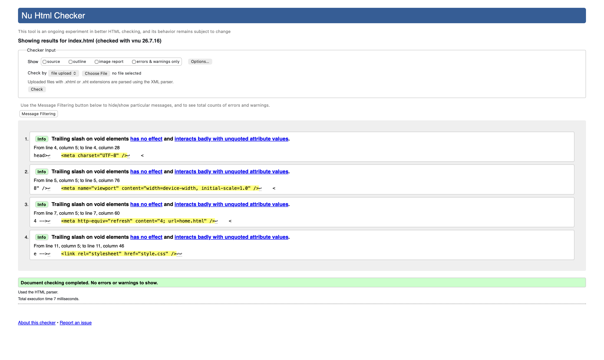
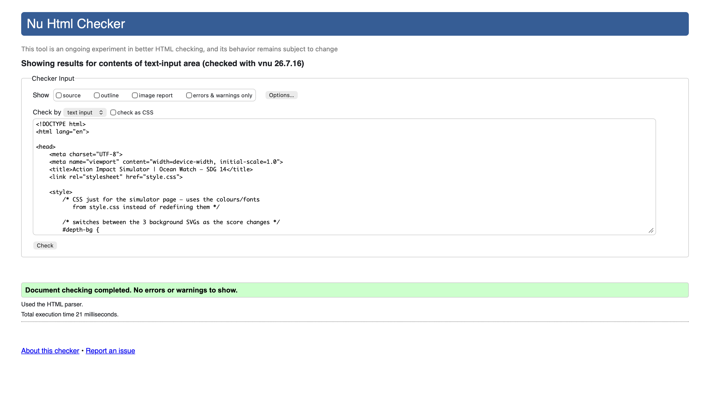
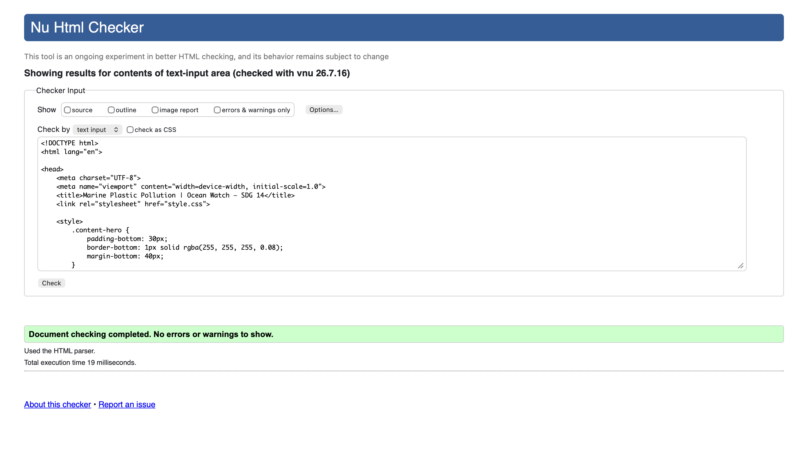

Ocean Watch · SDG 14: Life Below Water · Validation Page
This page provides evidence that the three pages I implemented pass HTML validation, using the W3C Nu Html Checker (vnu). Each section below shows the page validated, a screenshot of the checker result, and a short reflection, with a link back to the matching section of my Page Editor.
splash.htmlais.html
content_ST2.html

The checker flags four Info-level notices about the
trailing slash on void elements (<meta />,
<link />) — these are informational only, not
errors or warnings, and don't affect the result. Along the way I
also had to fix a genuine error the checker first raised on the
<meta http-equiv="refresh"> tag, which needed a
space after the semicolon (content="4; url=home.html")
to parse correctly. With that fixed, the page validates cleanly.

The first check of this page failed because the six action rows used
<article role="switch" aria-checked>, and
<article> doesn't support the
switch role or aria-checked under the HTML
ARIA rules. Switching those elements to
<div> (which accepts any role) resolved it, and
the page now validates with no errors or warnings.

This page originally had two skipped heading levels — the
action-card titles were <h3> straight after the
page's only <h1>, and three footer/card headings
were <h4> with no <h3> in
between. Adjusting those headings to follow a continuous
h1 → h2 → h3 → h4 order cleared both errors, and the
page now validates with no errors or warnings.
Most of the errors I ran into came from small, easy-to-miss syntax details rather than structural problems: a missing space in a meta-refresh value, an ARIA role placed on an element that doesn't support it, and heading levels that skipped a step when I was moving content between sections. None of them affected how the pages looked or behaved in the browser, which is exactly why running them through the checker mattered — these are the kind of issues that are invisible until you actually validate the markup.
The main lesson was to re-check a page after any structural edit (adding a new heading, changing an element's role or tag) rather than only at the end, since a small change in one place can quietly break the heading order or ARIA semantics somewhere else on the page.